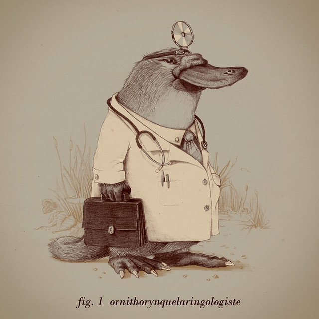

Proposta do ChatGPT: Insira uma imagem de sua escolha utilizando a tag <img> e configure um favicon personalizado para a página. Teste diferentes formatos de imagens (JPEG, PNG, SVG).
Resolução:
Da internet:

De um arquivo interno:
Inseri o favicon "Monkey Avatar Icon", baixado do site do Icon Archive, de 16px e formato ".png". O favicon pode ser visto acima.